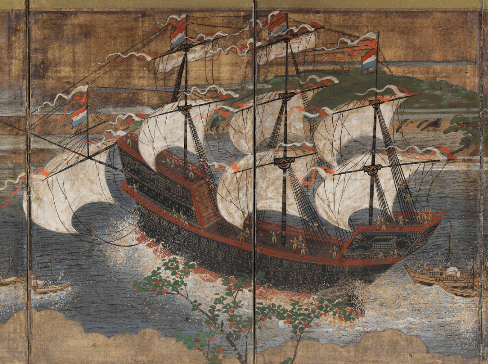

Que fue el PERIODO EDO?
La prosperidad que trajo el Período Edo fue de gran importancia para el avance de la Japón actual. Este período marcó la renovación de la cultura japonesa, la transformación de sus creencias, el fin de la era samurái y el surgimiento de los Ronin. Además, se caracterizó por la imposición de una cuarentena comercial, la consolidación de roles jerárquicos y una serie de cambios significativos en la sociedad japonesa.
Por qué fue tan importante?
El Período Edo en Japón se destaca por su importancia histórica y su profundo impacto en la cultura y sociedad japonesa actual. Esto se debe a varios factores clave que marcaron esta era y que la hacen significativa:
- Paz y Estabilidad: El establecimiento de una paz duradera y la estabilidad que se mantuvo durante más de dos siglos bajo el gobierno del shogunato Tokugawa es fundamental. Esta paz permitió un progreso significativo en otros aspectos de la sociedad japonesa.
- Desarrollo Económico: La prosperidad económica resultante de la estructura feudal, la promoción del comercio interno y el auge de las rutas comerciales contribuyeron al crecimiento económico de Japón. Este desarrollo económico sentó las bases para la modernización y el avance de la nación.
- Aislamiento de Japón: La política de "sakoku" o "país cerrado" ejerció un fuerte control sobre las interacciones exteriores y las relaciones comerciales. Aunque limitó el acceso a influencias extranjeras, también fortaleció la identidad y la independencia cultural de Japón.
- Florecimiento Cultural: Durante este período, se produjo un florecimiento en las artes y la cultura japonesa. La pintura, la poesía, la cerámica y la arquitectura alcanzaron su apogeo. El teatro kabuki y el teatro noh, junto con la promoción de la belleza y la simplicidad en la vida cotidiana, contribuyeron a la riqueza cultural de la nación.
- Transformación de los Samuráis: Los cambios en el papel de los samuráis, la clase guerrera, y el surgimiento de los Ronin reflejaron las transformaciones sociales y económicas que tuvieron lugar en esta época.
- Cambios Sociales y Urbanización: La sociedad japonesa se organizó jerárquicamente, con roles y responsabilidades definidos para samuráis, campesinos y mercaderes. El crecimiento de las ciudades y la movilidad social marcaron un cambio en la vida cotidiana.
- Política del Shogunato Tokugawa: La administración centralizada del poder y la regulación estricta establecida por el shogunato Tokugawa contribuyeron a mantener la paz y la estabilidad a lo largo del período.
- Influencia Duradera: El legado del Período Edo perdura en la cultura y la sociedad japonesa actual. Aspectos como la estética, las artes tradicionales, la disciplina y la jerarquía tienen sus raíces en esta época. La mentalidad de aislamiento influenció la relación de Japón con el mundo y su sentido de independencia cultural.
Duracion del Periodo
El período Edo, gobernado por la familia Tokugawa y sus 15 sucesivos shogunatos, se extendió por aproximadamente 265 años. Esta longevidad demuestra el éxito de la implementación de controles centralizados en todo el país, que resultaron en una reducción significativa de las guerras civiles y conflictos entre los señores feudales. Además, se destacan logros como el desarrollo económico, el sistema de clases, la urbanización y la promoción de la cultura en esta época.
Tokugawa - historia
Los familiares Tokugawa eran los daimios Shinpan, que eran unos 20 y controlaban los dominios que rodiaban EDO. Estos recibieron las mejores tierras junto con los daimios Fudai, clanes aliados. Mientras que los derrotados en Sekigahara se quedaron con los restos, las migajas de territorio.
El shogunato Tokugawa, dirigido por varios shogunes como Tokugawa Ieyasu, introdujo el sistema "baku-han", que unió al gobierno central y los clanes vasallos (daimyos) en Japón. El shogunato tenía responsabilidades administrativas, como arbitraje entre daimyos, control militar y asuntos exteriores, mientras que los daimyos tenían autonomía en sus dominios, pero estaban sujetos a una regla que les exigía mantener residencias en Edo.
ASCENSO AL PODER DEL CLAN TOKUGAWA
Tras la muerte de Hideyoshi en 1598, comenzaron a surgir tensiones entre los clanes vasallos de Hideyoshi debido a su joven heredero, Hideyori. Ieyasu Tokugawa buscó aliados y aprovechó la muerte del regente Toshiie en 1599 para tomar el castillo de Osaka y proclamarse "Señor del País".
Esto provocó un conflicto entre dos facciones: el bloque oriental, liderado por Ieyasu, y el bloque occidental, respaldado por figuras como Ishida Mitsunari. La crisis culminó en la Batalla de Sekigahara en octubre de 1600, donde Ieyasu emergió victorioso, consolidando su poder y legitimidad como líder.
Luego, Ieyasu redistribuyó el poder entre los clanes japoneses, otorgando más influencia a aquellos que lo habían apoyado antes de la batalla. Finalmente, en 1603, recibió el título de Seii Taishōgun "es un título japonés que se traduce como "Comandante en Jefe para la Pacificación de los Bárbaros". Fue un título de alto rango y gran importancia en el sistema de gobierno feudal japonés. El Seii Taishōgun era el líder militar supremo de Japón y tenía autoridad sobre las fuerzas militares del país." , estableciendo el dominio del clan Tokugawa en Japón durante los próximos dos siglos.
- Tokugawa Ieyasu (1603-1605)
- Tokugawa Hidetada (1605-1623)
- Tokugawa Iemitsu (1623-1651)
- Tokugawa Ietsuna (1651-1680)
- Tokugawa Tsunayoshi (1680-1709)
- Tokugawa Ienobu (1709-1712)
- Tokugawa Ietsugu (1713-1716)
- Tokugawa Yoshimune (1716-1745)
- Tokugawa Ieshige (1745-1760)
- Tokugawa Ienari (1787-1837)
- Tokugawa Ieyoshi (1837-1853)
- Tokugawa Iesada (1853-1858)
- Tokugawa Iemochi (1858-1866)
- Tokugawa Yoshinobu (1866-1867)
Gobernantes:
Tokugawa Ieyasu
Fundador del shogunato Tokugawa. Estableció su gobierno en Edo (actual Tokio). Inició la construcción del Castillo Edo. Mantuvo relaciones con países extranjeros como España, Portugal y los Países Bajos, pero luego limitó el contacto con extranjeros y promulgó leyes anticristianas. Fallece un año después de su retiro en 1616.
Tokugawa Hidetada
Hijo de Ieyasu y su sucesor como shogun. Consolidó el poder del shogunato y expandió la influencia Tokugawa. Sofocó la resistencia del clan Toyotomi en el sitio de Osaka en 1614-1615.
Tokugawa Iemitsu
Continuó fortaleciendo el shogunato y estableciendo políticas de aislamiento. Prohibió el cristianismo y limitó las interacciones con extranjeros. Suprimió la Rebelión de Shimabara en 1637-1638.
Tokugawa Ietsuna
Gobernó desde una edad temprana y estuvo bajo la regencia de consejeros. Enfrentó revueltas de rōnin y el Gran Incendio de Edo en 1657.
Tokugawa Tsunayoshi
Conocido como el "Shogun Perro" debido a sus leyes protectoras hacia los perros. Promovió el desarrollo cultural y el teatro en Japón. Realizó reformas económicas y judiciales.
Tokugawa Ienobu
Llevó a cabo reformas para mejorar la economía y la estabilidad política. Estableció el Gosankyō, un sistema de tres ramas familiares para el clan Tokugawa.
Tokugawa Ietsugu
Gobernó desde una edad muy temprana y estuvo bajo la regencia de consejeros. Abolió algunas leyes represivas de su predecesor.
Tokugawa Yoshimune
Implementó reformas económicas y culturales que mejoraron la estabilidad del país. Abolió el sistema sankin kōtai y promovió el estudio científico.
Tokugawa Ieshige
Tuvo poco interés en gobernar y se centró en actividades culturales como el ajedrez.
Tokugawa Ienari
Gobernó durante un largo período de estabilidad política y buenas cosechas. Tuvo una gran cantidad de hijos y estableció relaciones familiares con la nobleza.
Tokugawa Ieyoshi
Gobernó durante un período de agitación política y social. Negoció con las naves extranjeras, lo que llevó al fin del sakoku.
Tokugawa Iesada
Enfrentó rebeliones y desórdenes, marcando el comienzo del bakumatsu. Abogó por la unión entre el clan Tokugawa y la nobleza imperial.
Tokugawa Iemochi
Enfrentó rebeliones y desórdenes, marcando el comienzo del bakumatsu. Abogó por la unión entre el clan Tokugawa y la nobleza imperial.
Tokugawa Yoshinobu
El último shogún Tokugawa. Cedió el poder al emperador Meiji en 1867, marcando el final del shogunato Tokugawa y el comienzo de la Restauración Meiji.
Imprenta y filosofia
en el periodo edo se presenciaron avances en la tecnologia de impresion que facilitaron la produccion de libros y documentos. Ademas la filosia desempeñaria un papel importante en la sociedad japonesa, con la influencia del neoconfucianismo y el bushido, asi como el surgimiento del kokugaku. Estos aspectos contribuirian al desarollo cultural de la epoca. Siendo un mentor destacado, Musashi Miyamoto, quien crearia uno de los libros mas populares de este periodo, por su filosofia, sabiduria y estrategia sobre la arte marcial de la katana.
El legado de la Sociedad Japonesa
El final del período Edo no marcó el fin de todas las influencias que este período dejó. Hasta el día de hoy, Japón sigue haciendo uso de muchas de estas influencias, que incluyen la centralización del poder ,
la paz y estabilidad, que han dejado una impresión duradera en la sociedad japonesa, contribuyendo a la percepción de Japón como una nación pacífica y segura. Además, las bases para el desarrollo económico se establecieron durante el período Edo, y muchas de las tradiciones culturales, el sistema de clases y la mentalidad de independencia cultural y la identidad japonesa también perduran en la sociedad japonesa contemporánea. Estos aspectos demuestran la importancia y el impacto duradero del período Edo en la historia y la cultura de Japón.
Libros de Historia Japonesa
| Libro | Descripción |
|---|